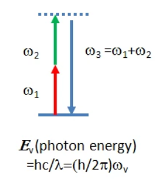
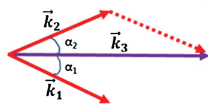
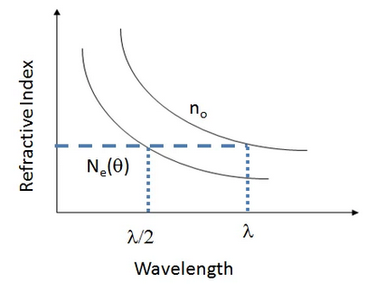

Introduction to single photons with the quED
Contents
Introduction to single photons with the quED#
In this text, we’re going to go over some of the basics of working with single photons, especially how they relate to the quED experimental setup. We’ll start with a single photon source, which you’ll be using in the lab. Then we’ll talk about how to detect single photons.
Next, we’re going to treat photons as indicidual particles, and we’ll show how to verify that a source is indeed producing single photons. You’ll reproduce that experiment in the lab.
Finally, as time allows, we’ll look at single-photon interference.
SPDC
APD
Hanbury Brown-Twiss & Second order coherence \(g^{(2)}\)
classical
quantum
Single photon interference
Single photon source: Spontaneous Parametric Down-Conversion (SPDC)#
First, let’s take a high level overview of what spontaneous parametric down conversio (SPDC) is. SPDC occurs when a pump photon is converted into 2 photons of less energy. Traditionally, one output photon is called the signal and the other is called the idler.
Phase Matching Conditions#
One important feature of SPDC is the fact that it always obeys energy conservation: the energy of a pump photon before SPDC occurs is equal to the sum of the signal and idler photons after SPDC occurs.
Fig. 16 https://drive.google.com/file/d/1neT7Zm-jl_A6yGI43xVysIl7POMfipq3/view?usp=sharing#
 (image from HC Photonics)
Another important feature is that the momentum after SPDC must be the same as the momentum before SPDC to satisfy conservation of momentum.
 (image from Couteau’s review paper
Recall that momentum is a vector, so the magnitude and direction need to be maintained. This is why we see that the signal and idler photons in the quED are non-colinear (they travel in different directions): their sum still matches the pump photons.
Matching the momentum is an a challening part of generating SPDC. As you recall, $\(\overrightarrow{k} = \frac{2\pi n}{\lambda}\)\( where \)n\(, the index of refraction, is a function of \)\lambda$, the wavelength of the light. There’s something about the challenges of matching the indices  (image from HC Photonics)
Types of SPDC#
Different types of SPDC
 (image from HC Photonics)
(image from HC Photonics)
Classical Nonlinear optics#
Now look very, very briefly at the classical nonlinear optics part
from IPython.display import Video
Video('VIDEOS/quED/testvideo.mov', width = 540)
---------------------------------------------------------------------------
ValueError Traceback (most recent call last)
/tmp/ipykernel_2935846/3280829218.py in <cell line: 2>()
1 from IPython.display import Video
----> 2 Video('VIDEOS/quED/testvideo.mov', width = 540)
~/anaconda3/lib/python3.8/site-packages/IPython/core/display.py in __init__(self, data, url, filename, embed, mimetype, width, height, html_attributes)
1408 "Consider passing Video(url='...')",
1409 ])
-> 1410 raise ValueError(msg)
1411
1412 self.mimetype = mimetype
ValueError: To embed videos, you must pass embed=True (this may make your notebook files huge)
Consider passing Video(url='...')
Hanbury Brown-Twiss#
Following Loudon, let’s walk through the HBT experiment for a single photon.
Recall a beamsplitter#
Consider a lossless beamsplitter with indpendent inputs \(\ahat\) and \(\bhat\). The outputs \(\chat\) and \(\dhat\) are defined as
where the boundary conditions for the electromagnetic fields are the same classically and in quantum, namely
The assumption is that \(\ahat\) and \(\bhat\) satisfy the boson commutation relations
and that \(\ahat\) and \(\bhat\) are independent fields, ie
You can verify that the outputs follow the same pattern and that the commutation relations are maintained.
and
Coincidence#
Now condsider the following case: \(\ahat\) is in a number state with a single photon while \(\bhat\) is in a vaccum state. We want to know what happens at the \(\chat\) and \(\dhat\). Specifically, we want to know how often we get a photon at both \(\chat\) and \(\dhat\) simultaneously. We call this a coincidence meaning an event where 2 (or more) detection events occur within a short period of time (on the scale of a few nanoseconds) on 2 separate detectors. Looking at coincidences is an important measurement in quantum optics.
What is the coincidence of \(\chat\) and \(\dhat\)?
Second order time coherence#
Work out the quantum and show the results for coherent light and Fock states. Present the results for other light sources.